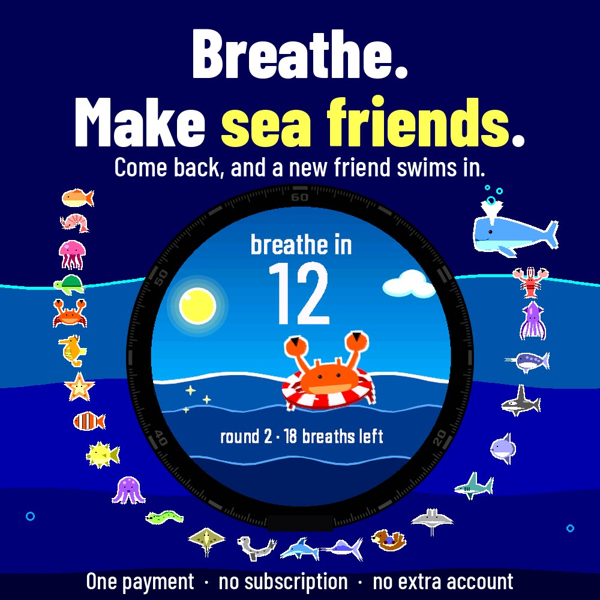
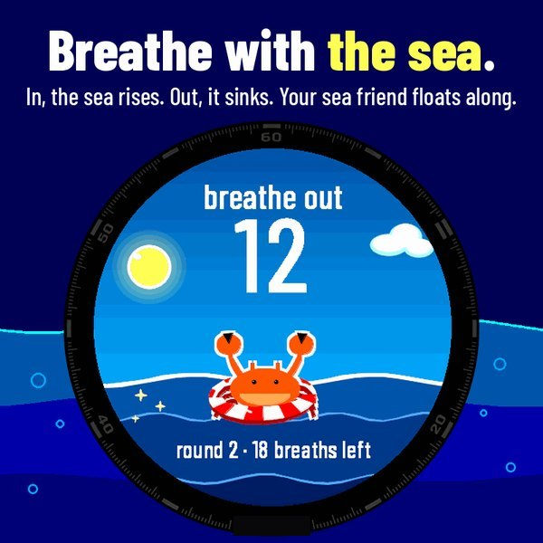
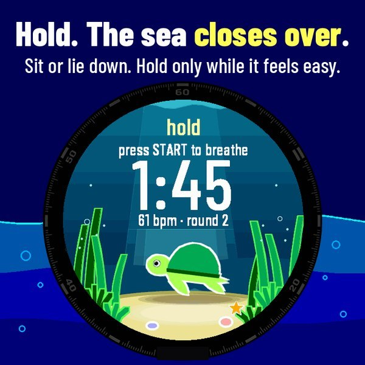
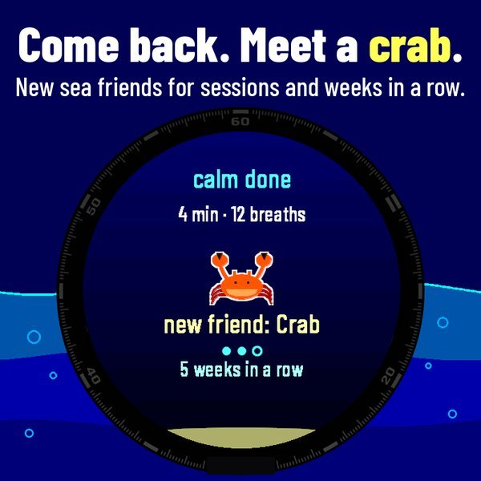
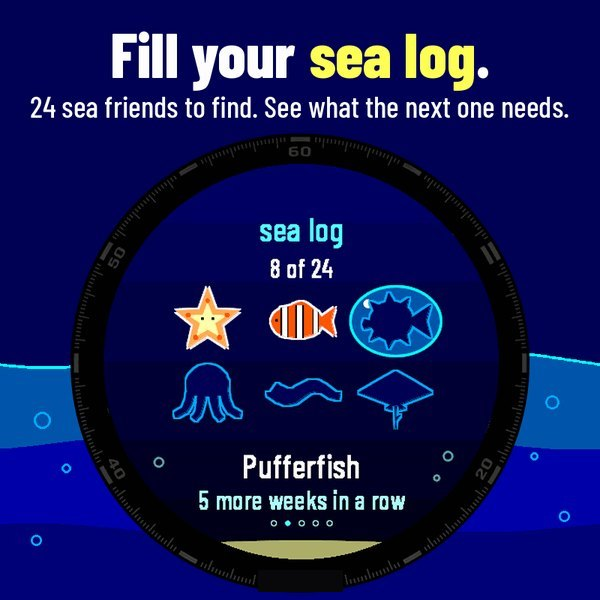

Ebb · for Garmin watches
Breathe with a small sea on your wrist.
Breath hold rounds and calm 4-7-8 breathing on your Garmin. Your round watch face becomes a porthole on a small sea: the water rises as you breathe in and falls as you breathe out, and when you hold your breath you go under water. Follow every phase by vibration, with your eyes closed. New sea animals join as you keep coming back.
$4.99 once. No subscription, no extra account, no phone app.

Two ways to breathe
Pick Rounds or Calm 4-7-8 from the menu. Every phase has its own vibration, and the last three breaths before a hold feel different, so you can close your eyes and follow along. Practise on land only: sit or lie down.
- Breath hold rounds. Rounds of deep breaths at a steady pace, then breathe out and hold for as long as it feels easy. Press a button to end the hold, then take one big breath in and hold it briefly to recover.
- Calm 4-7-8. Breathe in for 4, hold for 7, out for 8, with the sea rising and falling.
- My pattern. Set your own seconds in, hold, out and hold in the settings on the watch.
- Made for closed eyes. While you breathe and hold, the touchscreen does nothing, so a sleeve cannot stop a hold. Only the buttons work. Ebb makes no sound. Vibration can be turned off; one safety buzz stays on, every 30 seconds after 3:00 of holding.



Sea animals for showing up
A small fish swims with you from your first session. 24 sea animals join as you keep coming back, with sessions and weeks in a row, never by holding longer.
- Weeks, not days. Your streak counts weeks in which you reach your weekly goal (3 sessions, or set 2 to 7), so rest days never break it.
- Sea log. See your animals and exactly what the next one needs. Pick the one that swims with you.
- See your practice. Your hold for every round, today's sessions as bars, and 8 weeks of sessions and average hold.
- Saved in Garmin Connect. Each session is saved as a breathing activity with your heart rate. Rounds: one lap per round. For interest only: Ebb gives no score.

Install
Open the Ebb page in the Connect IQ Store, or search for Ebb in the Connect IQ app on your phone. Buy it once and install it on your watch. Then start Ebb from the list of apps on the watch.
- Price
- $4.99 once, no subscription
- Works on
- 28 round Garmin watches
- Account
- None besides your Garmin account
- Refunds
- 48 hours, by Garmin's store policy
Which watches
fēnix 7, 7 Pro, 7X, 7X Pro; fēnix 8 (43 mm, 47 mm, Pro 47 mm, Solar 47 mm, Solar 51 mm); epix Pro (Gen 2) 42, 47 and 51 mm; Forerunner 165, 165 Music, 255, 265, 570 (42 and 47 mm), 955, 965, 970; Venu 2, Venu 3, Venu 3S, Venu 4 (41 and 45 mm); vivoactive 5 and 6. The store page shows the final list for your watch.
Safety
Sit or lie down. Never practise breath holds in or near water, in the bath, or while driving. Feel dizzy or tingly? Stop and breathe normally. Not if pregnant, under 18, or with epilepsy, heart or blood pressure problems. Ebb is not a medical device and gives no medical advice. A hold stops by itself after five minutes.
Privacy
Ebb collects nothing. Your sessions, animals and settings stay on your watch. Only a saved activity goes to Garmin Connect, under Garmin's privacy policy. No analytics, no ads. Read the privacy notice.
Support
Mail thijs@dortus.com with your watch model. We aim to reply within 5 working days. More on the support page.
Made by Thijs at Dortus, in the Netherlands, with AI agents writing the code. Garmin, Garmin Connect, Connect IQ, fēnix, epix, Forerunner, Venu and vivoactive are trademarks of Garmin Ltd. or its subsidiaries; Ebb is not made by Garmin.